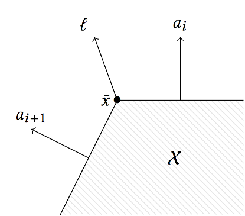

Fast 2D LPs
In this section we explain the implementation of the support vector for the case of convex polygons.
Introduction
Since vectors in the plane can be ordered by the angle with respect to the positive real axis, we can efficiently evaluate the support vector of a polygon in constraint representation by comparing normal directions, provided that its edges are ordered.
This is illustrated in the following picture.

If the normal directions of the polygon are ordered, the support vector in any direction always lies between two consecutive edges, $a_{i+1} \preceq \ell \preceq a_i$. Here we use the symbol $\preceq$ to compare directions, where the increasing direction is counter-clockwise.
The following lemma provides an algorithm to find the support vector.
Lemma
Let $\mathcal{X}$ be a polygon described by $m$ linear constraints $a_i^T x \leq b_i$, ordered by the normal vectors $(a_i)$, i.e., $a_{i} \preceq a_{i+1}$ for all $i \in \{1,\ldots,m\}$, where we identify $a_{m+1}$ with $a_1$. Let $\ell \in \mathbb{R}^2 \setminus \{\mathbf{0}_2\}$. Then there exists $i \in \{1,\dots,m\}$ such that $a_i \preceq \ell \preceq a_{i+1}$ and every optimal solution $\bar{x}$ of the linear program $\rho_\mathcal{X}(\ell) = \max\{ \ell^T x : x \in \mathcal{X}\}$ satisfies $\bar{x} \in \{x : a_i^T x \leq b_i\} \cap \{x : a_{i+1}^T x \leq b_{i+1}\}.$
Algorithm
First define a <= b as the comparison of directions using polar angles, with 0 being the direction (1, 0).
Now assume that the constraints in a polytope $\mathcal{X}$ are given as $a_i x + b_i$.
The following pseudocode explains how to find $\bar{x}$.
σ(d, X):
let i be the smallest index such that a_{i-1} <= d and a_i > d
return the vertex at the intersection of constraints i and i-1